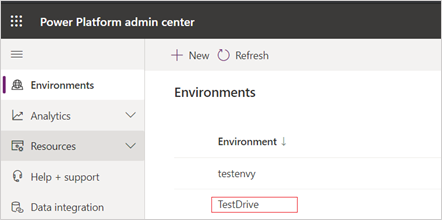

Attract-Benutzer können sich nicht mit dem Karriereportal auf Stellen bewerben
Important
Dynamics 365 Talent: Attract- und Onboard-Apps werden eingestellt. Weitere Informationen finden Sie unter Einstellen von Dynamics 365 Talent: Attract- und Onboard-Apps.
Abgang
Attract-Benutzer können sich nicht mit dem Karriereportal auf Stellen bewerben. Wenn sie versuchen, sich auf eine Stelle zu bewerben, die in Dynamics 365 Talent: Attract erstellt wurde, lädt der Browser die Seite kontinuierlich und schließt die Aktivität nicht ab.
Ursache
Dieses Problem tritt auf, wenn das Talent Relationship Team nicht über die Talent-Benutzerrolle verfügt.
Lösung
Weisen Sie dem Talent Relationship Team die Talent-Benutzerrolle zu.
Melden Sie sich im Power Platform Admin Center mit einem der folgenden Administratoranmeldeinformationen an:
- Dynamics 365-Administrator
- Globaler Administrator
- Power Platform-Administrator
Wählen Sie im Navigationsbereich Umgebungen und dann die Umgebung aus, in der die Talent-Benutzerrolle dem Talent Relationship Team zugewiesen werden soll.

Wählen Sie im Bereich Umgebungen die Umgebungs-URL aus und melden Sie sich beim Admininistratorportal der Umgebung an (z. B. https:
.crm.dynamics.com). Wählen Sie Einstellungen, System und dann Sicherheit.

Wählen Sie Teams aus.

Suchen Sie im Suchfeld nach dem Talent Relationship Team und wählen Sie dann aus den Suchergebnissen das Team aus.
Wählen Sie im Menüband ROLLEN VERWALTEN aus.
Wählen Sie im Dialogfeld Teamrollen verwalten und dann Talent-Benutzer aus der Liste der verfügbaren Rollen aus. Übernehmen Sie die Rolle dann mit OK.
Testen Sie Ihre Änderungen:
- Melden Sie sich über ein neues Browserfenster im Karriereportal an.
- Bewerben Sie sich über das Karriereportal auf die Stelle.